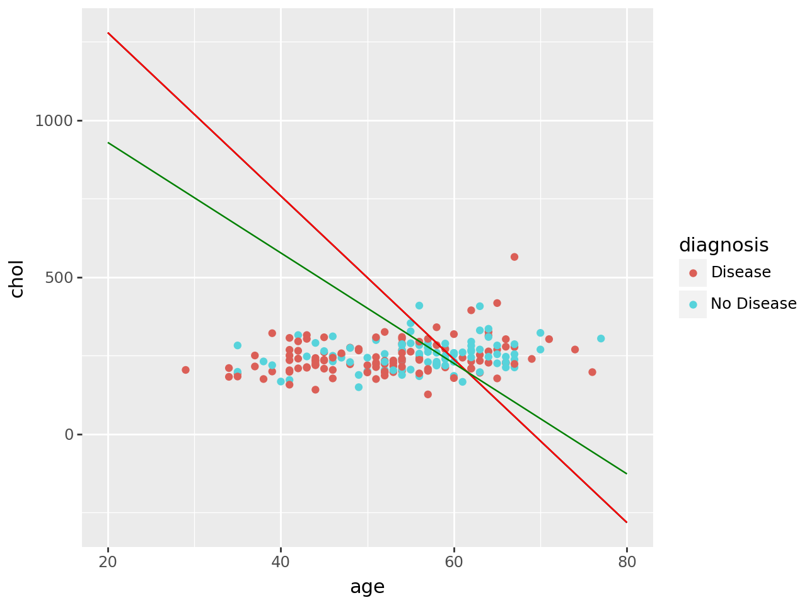

import pandas as pd
import numpy as np
from sklearn.pipeline import Pipeline
from sklearn.preprocessing import StandardScaler, OneHotEncoder, PolynomialFeatures, label_binarize, FunctionTransformer
from sklearn.linear_model import LinearRegression, LogisticRegression
from sklearn.model_selection import train_test_split, GridSearchCV
from sklearn.metrics import r2_score, mean_squared_error
from sklearn.pipeline import Pipeline
from sklearn.neighbors import KNeighborsRegressor, KNeighborsClassifier
from sklearn.tree import DecisionTreeRegressor, DecisionTreeClassifier
from sklearn.compose import make_column_selector, make_column_transformer, ColumnTransformer
from sklearn.model_selection import cross_val_score, cross_val_predict
from sklearn.metrics import confusion_matrix, ConfusionMatrixDisplay, accuracy_score, precision_score, recall_score, f1_score, roc_auc_score, classification_report, roc_curve, auc
import matplotlib.pyplot as pltThe Data
At this link, you will find a dataset containing information about heart disease patients: https://www.dropbox.com/scl/fi/0vrpdnq5asmeulc4gd50y/ha_1.csv?rlkey=ciisalceotl77ffqhqe3kujzv&dl=1
A description of the original dataset can be found here: https://archive.ics.uci.edu/dataset/45/heart+disease (However, this dataset has been cleaned and reduced, and the people have been given fictious names.)
1. Logistic Regression
Fit a Logistic Regression using only age and chol (cholesterol) as predictors.
For a 55 year old, how high would their cholesterol need to be for the doctors to predict heart disease is present?
How high for the doctors to estimate a 90% chance that heart disease is present?
df = pd.read_csv("ha_1.csv")
df = df.dropna()
df.head()| Name | age | sex | cp | trtbps | chol | restecg | thalach | diagnosis | |
|---|---|---|---|---|---|---|---|---|---|
| 0 | Magnolia Cassin | 60 | 1 | 1 | 117 | 230 | 1 | 160 | No Disease |
| 1 | Dr. Cathern Heathcote | 60 | 0 | 3 | 102 | 318 | 1 | 160 | Disease |
| 2 | Miles Wolf | 62 | 0 | 3 | 130 | 263 | 1 | 97 | No Disease |
| 3 | Mikaila Block | 43 | 1 | 1 | 115 | 303 | 1 | 181 | Disease |
| 4 | Mrs. Jacquline Marquardt | 66 | 1 | 1 | 120 | 302 | 0 | 151 | Disease |
X = df[["age", "chol"]]
y = df["diagnosis"]logreg_pipeline1 = Pipeline(
[#("preprocessing", ct1),
("logreg", LogisticRegression(max_iter=1000))]
).set_output(transform="pandas")
logreg1 = cross_val_score(logreg_pipeline1, X, y, scoring="roc_auc", cv=5).mean()
print(logreg1)
#COEFFICIENTS
# Fit the model
logreg_pipeline1.fit(X, y)
# Get feature names after preprocessing
preprocessed_feature_names = logreg_pipeline1.named_steps["logreg"].feature_names_in_
# Get coefficients from Logistic Regression
coefficients = logreg_pipeline1.named_steps["logreg"].coef_[0]
# Create a DataFrame for coefficients
coefficients_df = pd.DataFrame({
"Feature": preprocessed_feature_names,
"Coefficient": coefficients
}).sort_values(by="Coefficient", ascending=False)
# Display coefficients
print(coefficients_df)
#Intercept
intercept = logreg_pipeline1.named_steps["logreg"].intercept_[0]
print(intercept)0.6349815288434215
Feature Coefficient
0 age 0.046863
1 chol 0.001801
-3.2401122588588933#How high for the doctors to estimate a 90% chance that heart disease is present?
logit_p = np.log(.9 / (1 - .9))
(logit_p - intercept - (.04686331 * 55)) / .001801241587.714455705577#For a 55 year old, how high would their cholesterol need to be for the doctors to predict heart disease is present?
#When age is 55
logit_p = np.log(.5 / (1 - .5))
log55 = (logit_p - intercept - (.04686331 * 55)) / .00180124
log55367.87446917617496#When age is 80
log80 = (logit_p - intercept - (.04686331 * 80)) / .00180124#When age is 20
log20 = (logit_p - intercept - (.04686331 * 20)) / .00180124
log201278.47819216700352. Linear Discriminant Analysis
Fit an LDA model using only age and chol (cholesterol) as predictors.
For a 55 year old, how high would their cholesterol need to be for the doctors to predict heart disease is present?
from sklearn.discriminant_analysis import LinearDiscriminantAnalysislda_pipeline1 = Pipeline(
[#("preprocessing", ct1),
("lda", LinearDiscriminantAnalysis())]
).set_output(transform="pandas")
lda_pipeline1.fit(X, y)
#Coefficients
coefficients = lda_pipeline1.named_steps["lda"].coef_[0]
intercept = lda_pipeline1.named_steps["lda"].intercept_[0]
#Extract individual coefficients
beta_age = coefficients[0]
beta_chol = coefficients[1]
beta_age, beta_chol, intercept
#Equation
#Intercept + Beta(age) * age + Beta(chol) * CHOL = 0
#-3.22 + 0.0466
(0.04655743553694484, 0.0017896671039291314, -3.2196776604068784)age = 55
lda55 = -(beta_age * age + intercept) / beta_chol
lda55368.235357529938age = 20
lda20 = -(beta_age * age + intercept) / beta_chol
lda201278.7456084115433age = 80
lda80 = -(beta_age * age + intercept) / beta_chol3. Support Vector Classifier
Fit an SVC model using only age and chol as predictors. Don’t forget to tune the regularization parameter.
For a 55 year old, how high would their cholesterol need to be for the doctors to predict heart disease is present?
import sklearn.svm as svm
svc_pipeline1 = Pipeline(
[#("preprocessing", ct1),
("svc", svm.SVC(kernel="linear"))]
).set_output(transform="pandas")
svc_pipeline1.fit(X, y)
#tune the regularization parameter
param_grid = {
"svc__C": [0.001, 0.01, 0.1, 1, 10, 100, 1000]
}
grid_search = GridSearchCV(svc_pipeline1, param_grid, cv=5, scoring="roc_auc")
grid_search.fit(X, y)
best_params = grid_search.best_params_
print("Best Parameters:", best_params)
#Coefficients
coefficients = svc_pipeline1.named_steps["svc"].coef_[0]
intercept = svc_pipeline1.named_steps["svc"].intercept_[0]
#Extract individual coefficients
beta_age = coefficients[0]
beta_chol = coefficients[1]
age = 55
-(beta_age * age + intercept) / beta_cholBest Parameters: {'svc__C': 1}312.7005277830234svc_pipeline2 = Pipeline(
[#("preprocessing", ct1),
("svc", svm.SVC(kernel="linear", C=1))]
).set_output(transform="pandas")
svc_pipeline2.fit(X, y)
#intercepts
intercept = svc_pipeline2.named_steps["svc"].intercept_[0]
#coefficients
coefficients = svc_pipeline2.named_steps["svc"].coef_[0]
beta_age = coefficients[0]
beta_chol = coefficients[1]
beta_age, beta_chol, intercept
print(beta_age)
print(beta_chol)
print(intercept)
age = 55
svc55 = -(beta_age * age + intercept) / beta_chol
0.06439772419707879
0.0036589616029232275
-4.686034055211244age = 20
svc20 = -(beta_age * age + intercept) / beta_cholage = 80
svc80 = -(beta_age * age + intercept) / beta_chol4. Comparing Decision Boundaries
Make a scatterplot of age and chol, coloring the points by their true disease outcome. Add a line to the plot representing the linear separator (aka decision boundary) for each of the three models above.
#Create a dataframe for age 20, 55, and 80
df_logistic = []
df_logistic.append({"Age": 20, "Chol": log20})
df_logistic.append({"Age": 55, "Chol": log55})
df_logistic.append({"Age": 80, "Chol": log80})
df_logistic = pd.DataFrame(df_logistic)
df_lda = []
df_lda.append({"Age": 20, "Chol": lda20})
df_lda.append({"Age": 55, "Chol": lda55})
df_lda.append({"Age": 80, "Chol": lda80})
df_lda = pd.DataFrame(df_lda)
df_svc = []
df_svc.append({"Age": 20, "Chol": svc20})
df_svc.append({"Age": 55, "Chol": svc55})
df_svc.append({"Age": 80, "Chol": svc80})
df_svc = pd.DataFrame(df_svc)df_logistic| Age | Chol | |
|---|---|---|
| 0 | 20 | 1278.478192 |
| 1 | 55 | 367.874469 |
| 2 | 80 | -282.556762 |
df_lda| Age | Chol | |
|---|---|---|
| 0 | 20 | 1278.745608 |
| 1 | 55 | 368.235358 |
| 2 | 80 | -282.129107 |
df_svc| Age | Chol | |
|---|---|---|
| 0 | 20 | 928.700528 |
| 1 | 55 | 312.700528 |
| 2 | 80 | -127.299472 |
from plotnine import ggplot, aes, geom_point, geom_line
(
ggplot(df, aes(x="age", y="chol", color="diagnosis"))
+ geom_point() # Scatterplot of the main data
+ geom_line(aes(x="Age", y="Chol"), data=df_logistic, color="black")
+ geom_line(aes(x="Age", y="Chol"), data=df_lda, color="red")
+ geom_line(aes(x="Age", y="Chol"), data=df_svc, color="green")
)